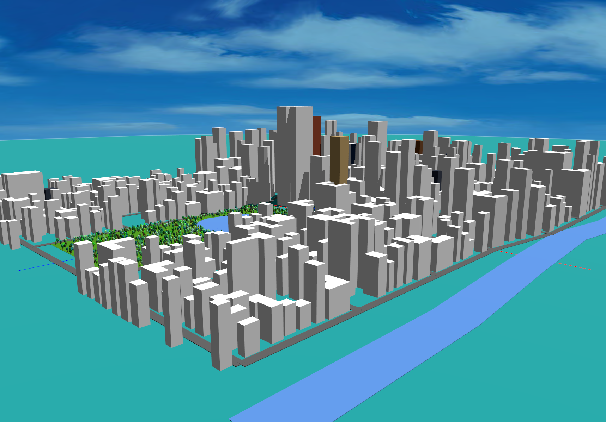
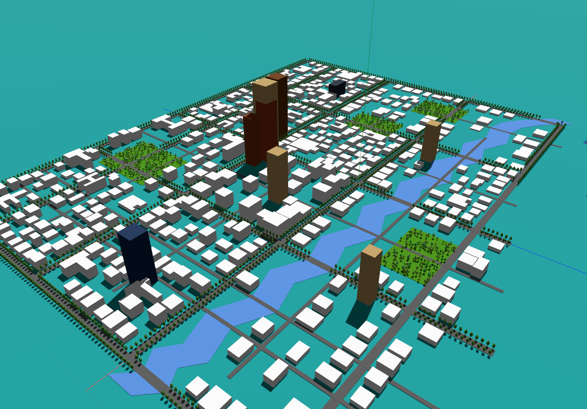
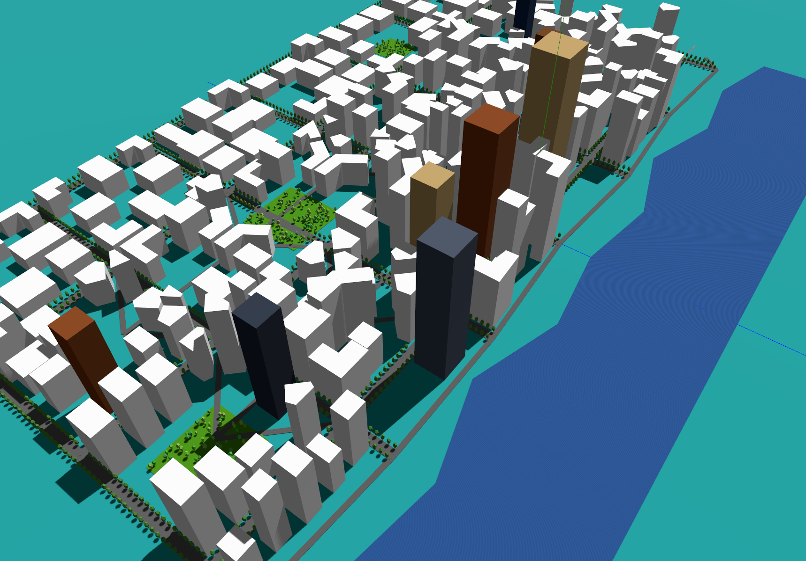

Generative Urban Design
By Charles Xie ✉ and Xiaotong Ding ✉
Urban design is the strategic process of shaping the physical form of a city. It orchestrates the relationships among buildings, streets, and open spaces to foster sustainable, functional, and cultural urban life. Generative urban design uses AI to efficiently explore complex solution spaces and automatically generate design alternatives that meet a set of objectives and constraints. In this article, we show you that generative AI (GenAI) based on large-language models (LLMs) can provide a novel method to implement generative urban design. This may also provide a new way to create a language-based user interface for games such as SimCity and Minecraft.
An advantage of using GenAI in Aladdin — a CAD platform — is that it can translate users' abstract ideas expressed in natural languages into concrete designs visualized as interactive 3D models instantaneously. For example, the following images show the results when GenAI was asked to create a city that looks like New York, Los Angeles, and Hong Kong, respectively.



AI-generated urban designs similar to New York, Los Angeles, and Hong Kong
As you can see from the above images, AI is able to capture some basic features of the three cities and return 3D models that approximately represent them. If the initial model is not satisfactory, the user can always ask AI to improve, as illustrated in the following example.
Generating a place like New York
The following are the prompts used to generate a city like Manhattan and AI reasoning returned at each round:
Round 1
Prompt:
Design a city like Manhattan.AI reasoning:
Designing a Manhattan-like city. Key features: 1) Grid street pattern with major avenues running north-south and streets running east-west. 2) Two rivers on east and west sides (Hudson and East River). 3) Broadway cutting diagonally. 4) Central Park as major green space in upper middle area. 5) Different zones: Financial district (south), Midtown with tall buildings, residential areas. 6) Landmarks like Empire State Building area, Times Square area, etc. Creating road network with main avenues (1st through West Side Highway equivalent) and cross streets. Rivers on both sides running north-south.
Round 2
Prompt:
Make the central park more elongated. Remove the road across the central park.AI reasoning:
User wants Central Park to be more elongated (longer north-south, narrower east-west) like the real Central Park. Also need to remove any roads that cross through the park. I'll extend the park vertically and make it narrower, then adjust the road network to go around it instead of through it. Real Central Park is roughly 4km long and 0.8km wide, so ratio is about 5:1. I'll make it stretch from around y=100 to y=850, and narrow it to about x=-200 to x=200.
Round 3
Prompt:
Add a pond to the central park. The pond should take one third of the area of the park.AI reasoning:
User wants to add a pond inside Central Park. The park currently spans from [-200,50] to [200,850], which is 400 wide and 800 tall. Total area is 320,000 sq units. One third would be about 106,667 sq units. I'll add a natural-looking pond shape in the park. A good size would be roughly 300 wide and 350 tall (105,000 sq units) which is close to one third. I'll place it in the lower-middle portion of the park with an organic shape. I'll use the rivers array to add this pond as a water body.
Round 4
Prompt:
Add trees to central park.AI reasoning:
User wants to add trees to Central Park. Looking at the data structure, I don't see a specific 'trees' field. However, I can add trees as part of the park decoration. Since the schema doesn't have a dedicated trees array, I should check if there's a way to represent vegetation. Looking at the structure again - there's parks, ponds, but no trees field explicitly. I'll add a 'trees' array to the city object to represent tree clusters or individual trees within the park. Trees should be scattered throughout the park but avoiding the pond area. The park spans from [-200,50] to [200,850] and the pond is roughly centered around [0, 290]. I'll place trees around the park avoiding the pond area.
If you would like to explore these AI-generated designs yourself, use the following embedded window that displays them in a project gallery. Double-click a thumbnail image in the gallery to load the corresponding 3D model for viewing and interactions.
Live window above (view in full screen) — Chrome or Edge recommended
Note that in order to use GenAI in Aladdin, you must create an Aladdin account and create a project of your own. Then you can use GenAI to add new designs to your projects.